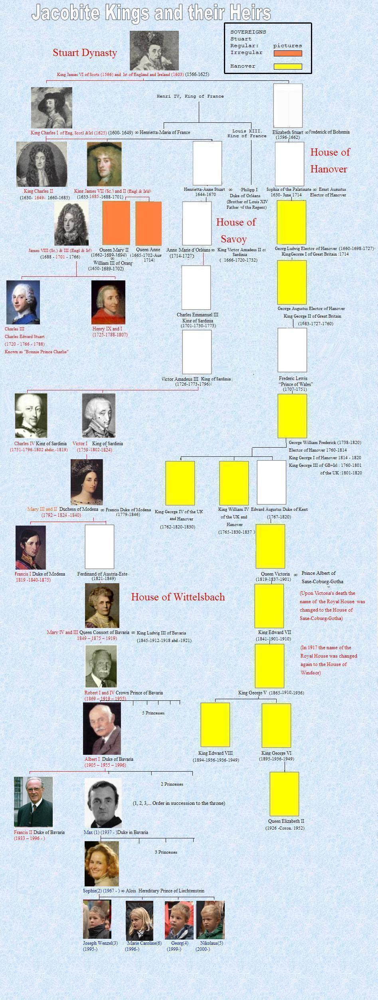

The Jacobite Kings and their Heirs


The Jacobites consider that the monarchical principle
and the principle of primogeniture cannot logically be
severed as they are nowadays in England.
According to these rules, the eldest son succeeds his
father and, failing issue, the succession is vested
in the elder female line.
Thus, the present sovereign of the United Kingdom
ought to be Francis II, Duke of Bavaria, as
representative of the senior female line of the Royal
House of Stuart, since the male has become extinct on
the death of Prince Charlie's brother, Henry, in 1807.
The Hanoverian dynasty, derived from a daughter of
James the First, has no right to the throne as long as the
whole issue of Charles the First is not exhausted.
(There are still over 100 descendants of this King
alive!) Besides, the parliamentary vote by which the
Hanoverian dynasty obtained their title was not really
representative of the will of the people.
The opponents of these views stress that there is now
no single legitimate MALE descendant of any of the
Stuart Kings. ("Great Stewart of Scotland" was a
hereditary title received from the Scottish King David
I by the third son to the ancestor of the Race, Alan
Count of Dol and Dinan, in Brittany). The direct male
line failed issue with James V of Scotland and the
succession of the House was continued through his
daughter, Mary Queen of Scots whose son, James VI
became King of England as James the First.
Male descendants failed again on the death of Prince
Charlie and of his brother, the Cardinal of York,
"Henry IX and I" (for the Jacobites).
Henry left his personal heirlooms, including the
Scottish Coronation Ring to George III, thus nominating
him tacitly heir to the Stuarts' rights to the throne.
|
Les Jacobites considèrent que le principe monarchique et celui de primogéniture constituent un tout qu'on ne peut disjoindre, comme c'est le cas Outre-Manche. Selon ces règles, le fils aîné succède à son père et à défaut, la succession revient à la branche aînée par les femmes. Ainsi, l'actuel souverain du Royaume Uni devrait être François II, Duc de Bavière, en tant que representant de la branche aînée par les femmes de la famille royale des Stuart, la branche mâle s'étant éteinte à la mort du frère du Prince Charlie, Henri, en 1807. La dynastie Hanovrienne, issue d'une fille de Jacques I, n'a aucun droit au trône tant que toute la descendance de Charles I n'est pas éteinte. (Plus de cent descendants de ce roi sont encore en vie!) De plus, le vote du Parlement intronisant la dynastie Hanovrienne n'était pas vraiment représentatif de la volonté populaire. Les adversaires de cette théorie soutiennent que qu'il n'existe plus aucun descendant MALE légitime d'aucun roi Stuart. (Grand "Stewart" d'Ecosse était un titre héréditaire décerné par le Roi d'Ecosse David I au 3ème fils de l'ancêtre de la Race, Alain Comte de Dol et de Dinan, en Bretagne). La descendance mâle s'éteignit avec Jacques V d'Ecosse et la succession de la race fut assurée par sa fille, la Reine Marie Stuart dont le fils Jacques VI devint Roi d'Angleterre sous le nom de Jacques I. Une descendance mâle faisait également défaut à la mort du Prince Charlie et à celle de son frère, "Henri IX et I" (selon les Jacobites). Henri lègua son héritage personnel, y compris l'Anneau Ecossais de Couronnement à George III, le désignant ainsi tacitement comme l'héritier des droits des Stuart sur la couronne de Grande Bretagne. |
|
(tomes I à V) existent aussi en LIVRE DE POCHE 
|
(CD 1 à 5) existent aussi en DISQUES CD 
|
A Jacobite and a Hanoverian Scottish anthem (sequenced by Ch.Souchon)